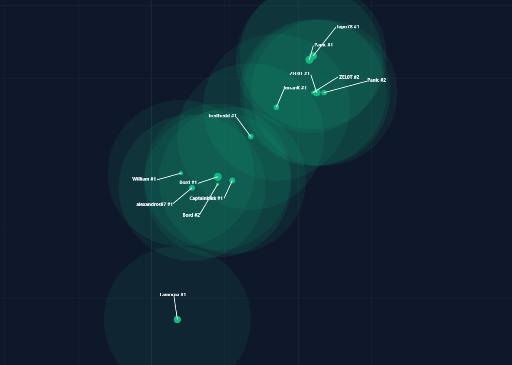
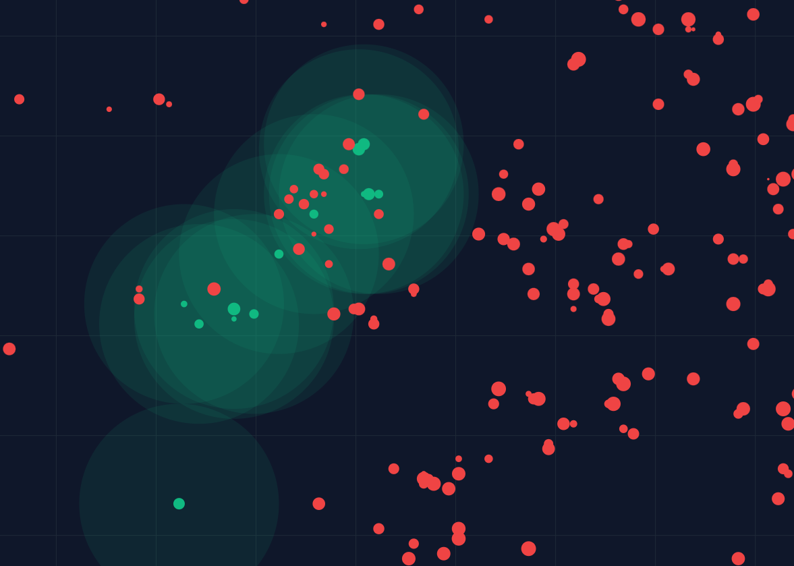
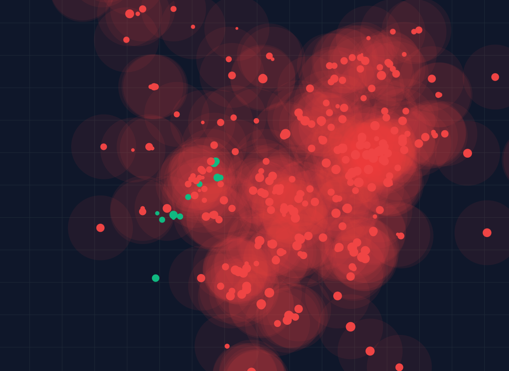
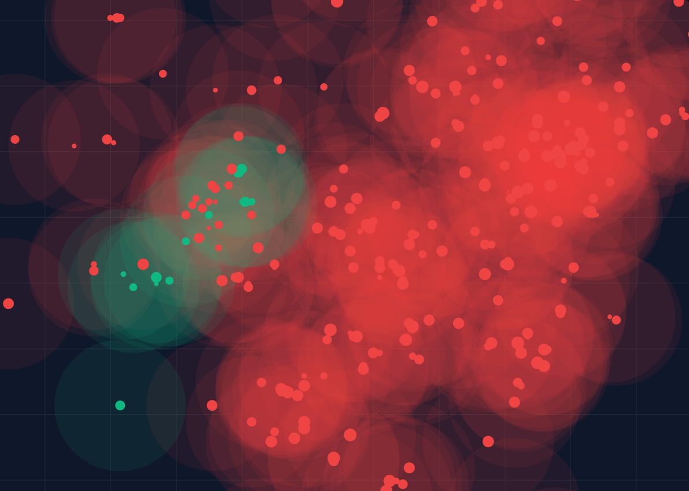
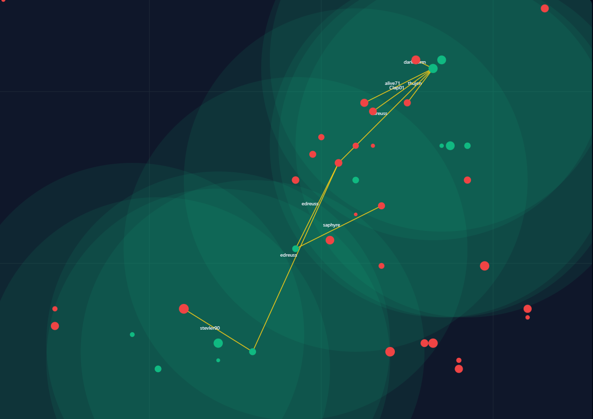

Water vs Fire
A conflict overview for new recruits
Our goal: all green
Welcome to the front. If you're new to the Water alliance, this page will give you the big picture of the conflict we're fighting. It's not just random raiding — this is a territorial war against a powerful, multi-wing Fire coalition that surrounds us.
Our long-term vision is simple but ambitious: turn the entire local area green. Right now we hold a strong but small pocket of territory. Fire holds far more ground and is actively pushing into ours. Understanding the map, the influence circles, and the current strikes is essential for every member.
1. Our Territory — The Green Pocket
This is where we live. The image below shows all Water villages (our supplemented member list) inside the green 20-square influence circles. Labels are turned on so you can see exactly who owns what and where our players are clustered.
These green circles represent our "safe" and "claimed" area. Any village inside them is under Water influence. Our immediate goal is to defend and slowly expand these circles.

All Water villages with 20-radius green territory circles and player name + village number labels enabled.
2. The Fire Presence — Dominant in Our Area
When we turn on the red dots, the scale of the threat becomes obvious. Fire (all three wings) is one of the largest and most active alliances operating right on our doorstep.
Every red dot is a Fire village. Many of them sit uncomfortably close to our green circles. This is not a distant enemy — they are embedded in the same region we call home.

Water (emerald) and Fire (red) villages together. Fire is clearly one of the dominant powers in our local region.
3. Fire Inside Our Circles — The Infiltration
This is one of the most important images for new players to understand.
Here we have our green 20-radius influence circles turned on, with both Water and Fire villages visible. Look closely: many red Fire dots sit inside our green circles.
This means Fire villages are currently operating within what we consider "our" territory. They are farming the same land, potentially scouting our players, and representing a direct encroachment on our influence.

Our green 20r circles with both alliances shown. Notice the red Fire villages sitting inside our claimed territory.
4. Their Reach — Water Inside Fire Influence
Now flip the perspective. Here are the Fire 20-radius influence circles turned on, with both alliances visible.
The difference is stark. Fire's influence area is dramatically larger. Several of our own Water villages sit inside their red circles. This illustrates the imbalance: they control far more "breathing room" and can project power much more easily than we currently can.
This is why we feel pressure. Their territory is not just bigger — it actively overlaps and surrounds our smaller green pockets.

Fire's red 20r circles active. Our green villages are visibly swallowed inside their much wider sphere of influence.
5. The Current Front — Both Influences + Active Strikes
This is the full picture we operate in every day: both Water (emerald) and Fire (red) villages plotted, with both sets of 20-radius influence circles visible at the same time.
You can clearly see the overlapping zones and the contested space between us. This is the battlefield.
On top of the territorial situation, we are conducting active strikes against key Fire targets (the "Operation Clap Alive / Claptrap" actions and follow-up hits). These strikes are part of our strategy to weaken their forward positions and protect our own villages.

The full current situation: Water + Fire villages + both alliances' 20r influence circles. Long-term goal = everything inside green.
Strikes Already Executed
This screenshot shows the actual strike arrows that have already been launched.
You can see the paths of our offensives, primarily originating from key Water villages (especially the main attack village at -112|81, with contributions from other players such as Fredfredd and Captainbikk). These represent real operations carried out against specific Fire targets as part of our coordinated pushback.
Each arrow is a deliberate strike aimed at weakening Fire's forward positions and protecting our territory.

Strike lines indicating attacks already carried out. These are the concrete actions taken against Fire villages in our area.
Strategic Picture
What We Control
- • A tight, well-organized pocket of 13+ Water villages
- • Strong local coordination (Panic, Fredfredd, Captainbikk, Lamorna, etc.)
- • Ongoing offensive strikes against high-value Fire targets
- • Clear visual identity with the green 20r circles
The Challenge
- • Fire has ~20× more villages in the broader region
- • Their influence circles are significantly larger and more spread out
- • Multiple Fire wings operating in the same area
- • Direct Fire villages already sitting inside our claimed territory
Long-term objective:
Gradually expand our green influence until the local map is predominantly Water-controlled. This means consistent farming, successful strikes that reduce Fire activity near us, recruiting and growing our own villages, and denying Fire the ability to comfortably farm inside our circles.
What This Means for You (New Water Members)
- Know the map. Open the main Water + Fire Territory Map regularly. Learn where the green circles are and which red dots are closest to us.
- Respect the territory. Farming inside our 20r circles is generally safer and more efficient. Be aware when you're operating near the edges.
- Support the strikes. When leadership calls for coordinated hits (especially the ongoing Claptrap-related operations), participate if you can. Every successful strike weakens Fire's forward presence.
- Grow smart. The more strong, active Water villages we have inside the green circles, the harder it becomes for Fire to push us back.
- Ask questions. This conflict has history and nuance. Experienced members (Panic, ZEL0T, etc.) can fill you in on specific targets and why certain villages matter.